9th Grade General Knowledge Worksheets
642 General Knowledge resources for 9th Grade, ready to print: Sahel, Sacerdote, Sabbia, Rösti and more. Each resource page shows the grade range, page count and a preview and links straight to the product on TpT.
642 resources
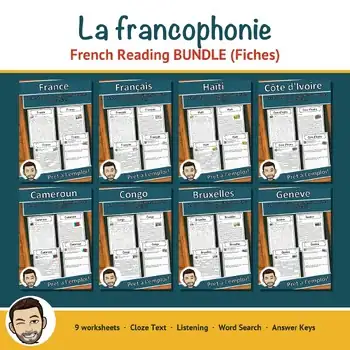
La francophonie – French Reading BUNDLE | French-Speaking World Fiches
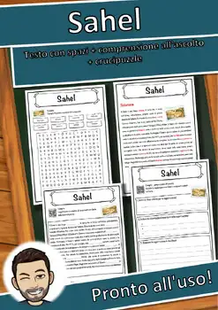
Sahel – Italian Reading Comprehension Worksheet (Scheda): Cloze & Listening
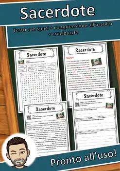
Sacerdote – Italian Reading Comprehension Worksheet (Scheda): Cloze & Listening
Sabbia – Italian Reading Comprehension Worksheet (Scheda): Cloze & Listening
Rösti – Italian Reading Comprehension Worksheet (Scheda): Cloze & Listening
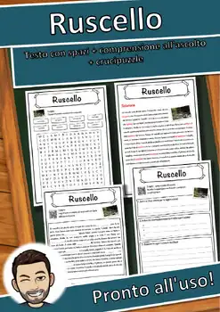
Ruscello – Italian Reading Comprehension Worksheet (Scheda): Cloze & Listening
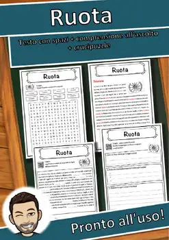
Ruota – Italian Reading Comprehension Worksheet (Scheda): Cloze & Listening
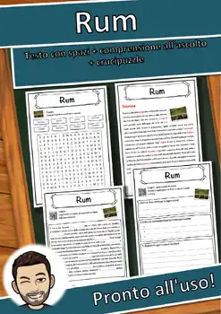
Rum – Italian Reading Comprehension Worksheet (Scheda): Cloze & Listening
Ruggine – Italian Reading Comprehension Worksheet (Scheda): Cloze & Listening
Rublo – Italian Reading Comprehension Worksheet (Scheda): Cloze & Listening
Rovine – Italian Reading Comprehension Worksheet (Scheda): Cloze & Listening
Rosa Parks – Italian Reading Comprehension Worksheet (Scheda): Cloze & Listening
Rosa – Italian Reading Comprehension Worksheet (Scheda): Cloze & Listening
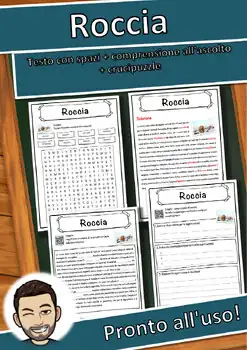
Roccia – Italian Reading Comprehension Worksheet (Scheda): Cloze & Listening
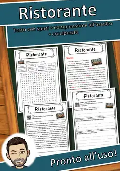
Ristorante – Italian Reading Comprehension Worksheet (Scheda): Cloze & Listening
Rispetto – Italian Reading Comprehension Worksheet (Scheda): Cloze & Listening
Riso – Italian Reading Comprehension Worksheet (Scheda): Cloze & Listening
Rio Grande – Italian Reading Comprehension Worksheet (Scheda): Cloze & Listening
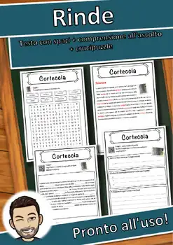
Rinde – Italian Reading Comprehension Worksheet (Scheda): Cloze & Listening
Rene – Italian Reading Comprehension Worksheet (Scheda): Cloze & Listening
Reliquia – Italian Reading Comprehension Worksheet (Scheda): Cloze & Listening
Religion – Italian Reading Comprehension Worksheet (Scheda): Cloze & Listening
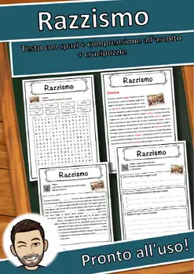
Razzismo – Italian Reading Comprehension Worksheet (Scheda): Cloze & Listening
Rasatura – Italian Reading Comprehension Worksheet (Scheda): Cloze & Listening
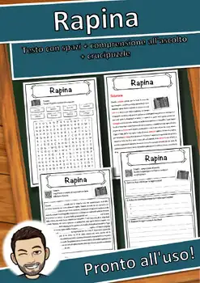
Rapina – Italian Reading Comprehension Worksheet (Scheda): Cloze & Listening
Ragazzo – Italian Reading Comprehension Worksheet (Scheda): Cloze & Listening
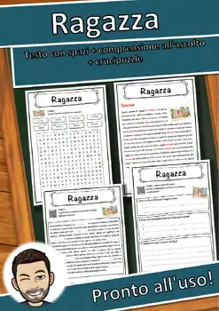
Ragazza – Italian Reading Comprehension Worksheet (Scheda): Cloze & Listening
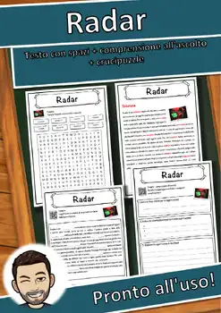
Radar – Italian Reading Comprehension Worksheet (Scheda): Cloze & Listening
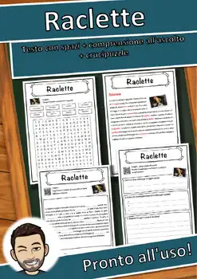
Raclette – Italian Reading Comprehension Worksheet (Scheda): Cloze & Listening
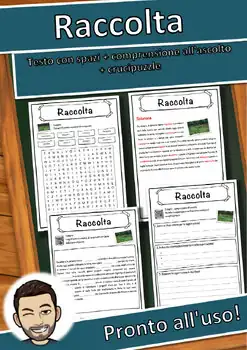
Raccolta – Italian Reading Comprehension Worksheet (Scheda): Cloze & Listening
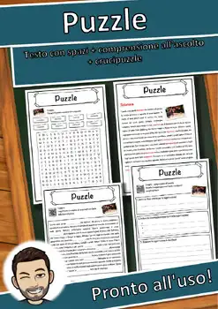
Puzzle – Italian Reading Comprehension Worksheet (Scheda): Cloze & Listening
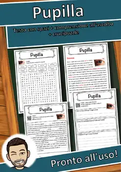
Pupilla – Italian Reading Comprehension Worksheet (Scheda): Cloze & Listening
Pubertà – Italian Reading Comprehension Worksheet (Scheda): Cloze & Listening
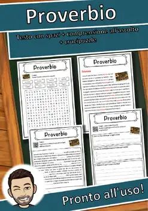
Proverbio – Italian Reading Comprehension Worksheet (Scheda): Cloze & Listening
Propaganda – Italian Reading Comprehension Worksheet (Scheda): Cloze & Listening
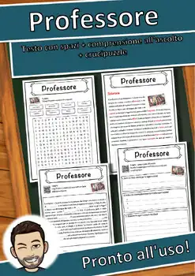
Professore – Italian Reading Comprehension Worksheet (Scheda): Cloze & Listening
Principe – Italian Reading Comprehension Worksheet (Scheda): Cloze & Listening
Primavera – Italian Reading Comprehension Worksheet (Scheda): Cloze & Listening
Prigione – Italian Reading Comprehension Worksheet (Scheda): Cloze & Listening
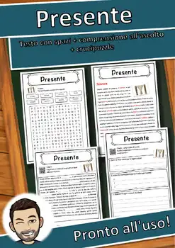
Presente – Italian Reading Comprehension Worksheet (Scheda): Cloze & Listening
Preghiera – Italian Reading Comprehension Worksheet (Scheda): Cloze & Listening
Pozzo – Italian Reading Comprehension Worksheet (Scheda): Cloze & Listening
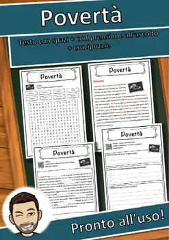
Povertà – Italian Reading Comprehension Worksheet (Scheda): Cloze & Listening
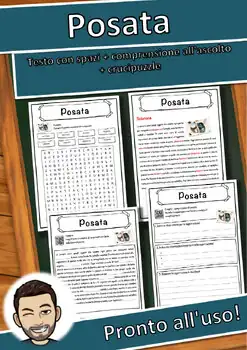
Posata – Italian Reading Comprehension Worksheet (Scheda): Cloze & Listening
Porta – Italian Reading Comprehension Worksheet (Scheda): Cloze & Listening
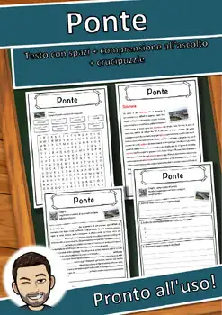
Ponte – Italian Reading Comprehension Worksheet (Scheda): Cloze & Listening
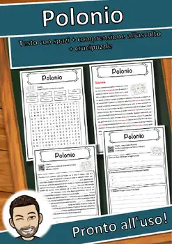
Polonio – Italian Reading Comprehension Worksheet (Scheda): Cloze & Listening
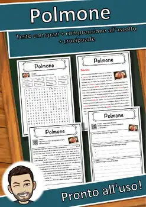
Polmone – Italian Reading Comprehension Worksheet (Scheda): Cloze & Listening
No resources found – try a different search term or filter.